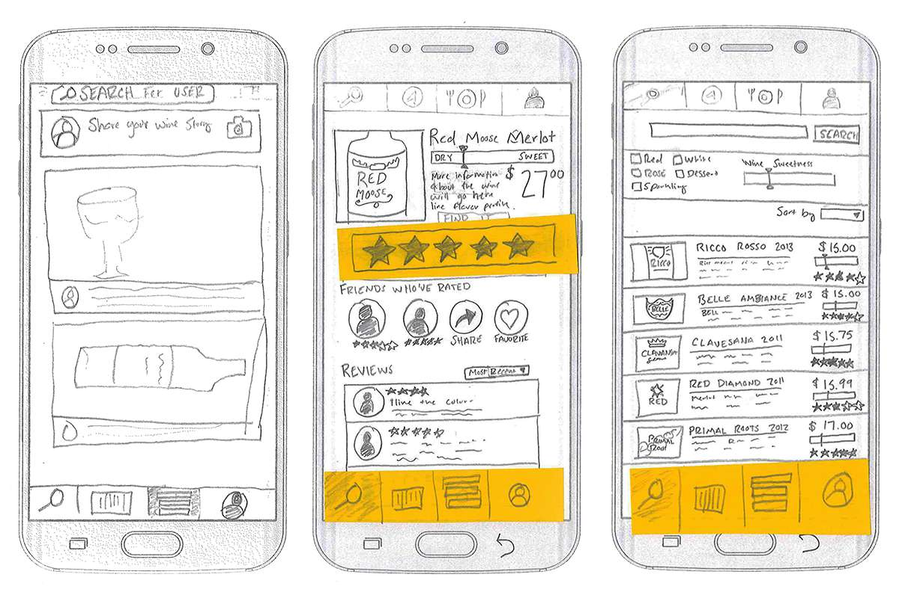
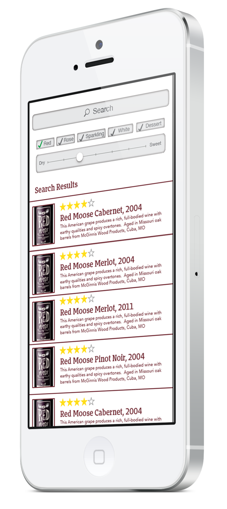
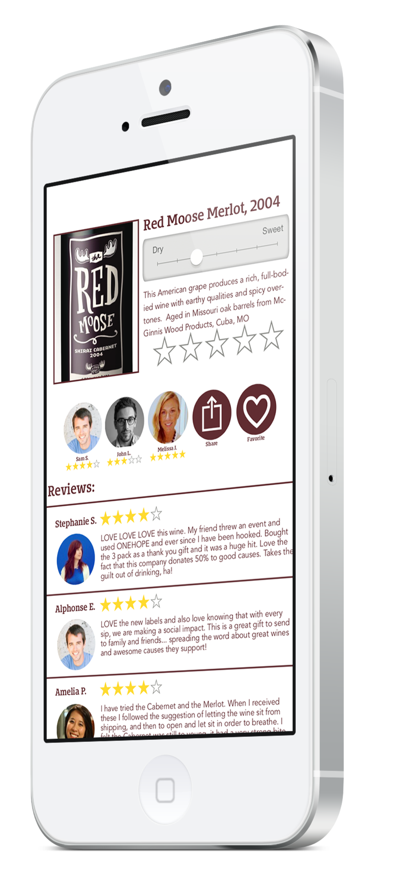
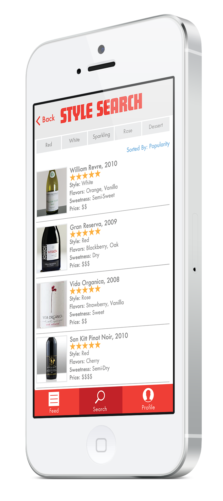
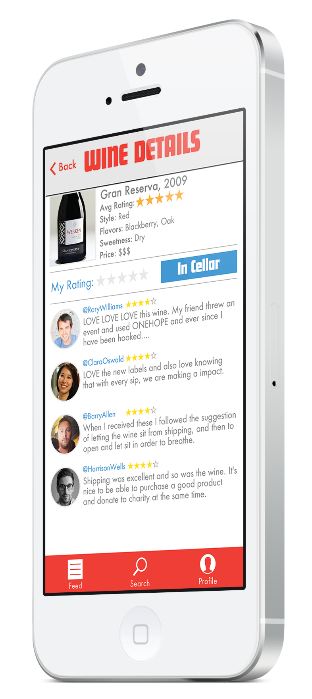
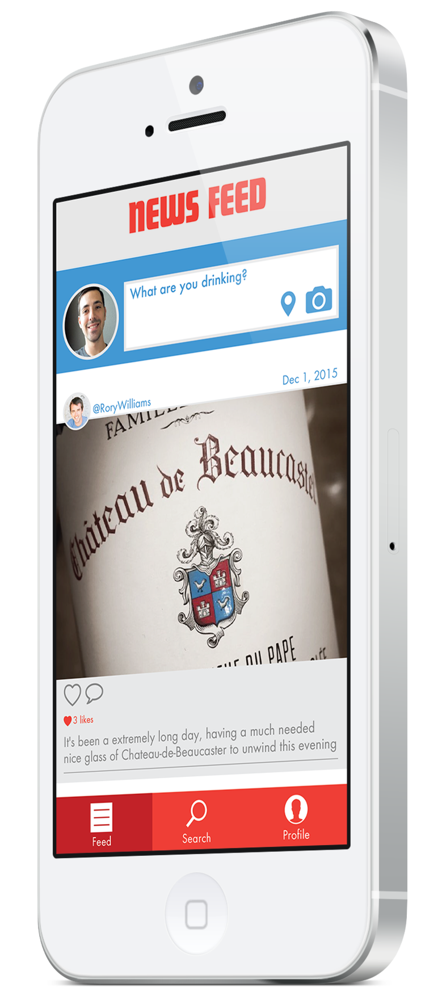
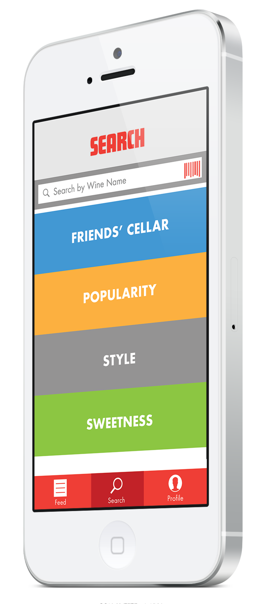

Uncorked
Social interaction is the backbone of many wine enthisuists, enjoying both the varietal of wine and company. In order to foster this environment, a social engamgent app was developed around the wine culture.
Social interaction is the backbone of many wine enthisuists, enjoying both the varietal of wine and company. In order to foster this environment, a social engamgent app was developed around the wine culture.
Utilizing The Sprint method, a five-day process that helps solve design problems quickly by determining the problem, answering critical questions, protoyping and testing ideas with final users, a clear path was identified resulting in the final outcome.
The goal was identified to create a platform in which users can create content, sharing wine stories and reviews with friends and a larger audience—utlimately weaving the story of connectivity.
Paper prototypes were created and user tested to create the final layout which was then moved into digital prototypes for additional testing.
Branded wireframes were tested to determine the success of both the UX/UI of the responsive site.
 After initial user testing, the brand and interface was reassesed resulting in a completely updated tone.
   Wino is a mobile social application that allows wine enthusiasts (known as winos) to rate wines, add wine to a virtual cellar, connect with friends and other users, and discover new wines to enjoy.